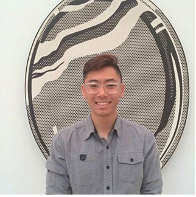
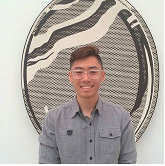

About us
The Department of Computer Science strives to provide the highest quality education in Computer Science at the undergraduate and graduate levels. We offer programs that lead to the Bachelor of Science degree (BSCS), and the Master of Science degree (MSCS). We also offer Computer Science Certificates in Cybersecurity. Our Bachelor's degree in Computer Science is accredited by the Computing Accreditation Commission of ABET. Both programs, BSCS and MSCS, are accredited by the Western Association of Schools and Colleges (WASC).
The Department of Computer Science, jointly with the Department of Computer Engineering, offers a program that leads to a Bachelor of Science degree in Software Engineering (BSSE). Beginning Fall 2017 semester, the Department of Computer Science, jointly with the Department of Biological Sciences will offer a Minor in Bioinformatics.
Here is a picture of our greatest alumnis Richard Papalia, Bryan Nguyen, Jack Wanke who all luckily graduated in 2017.
 
